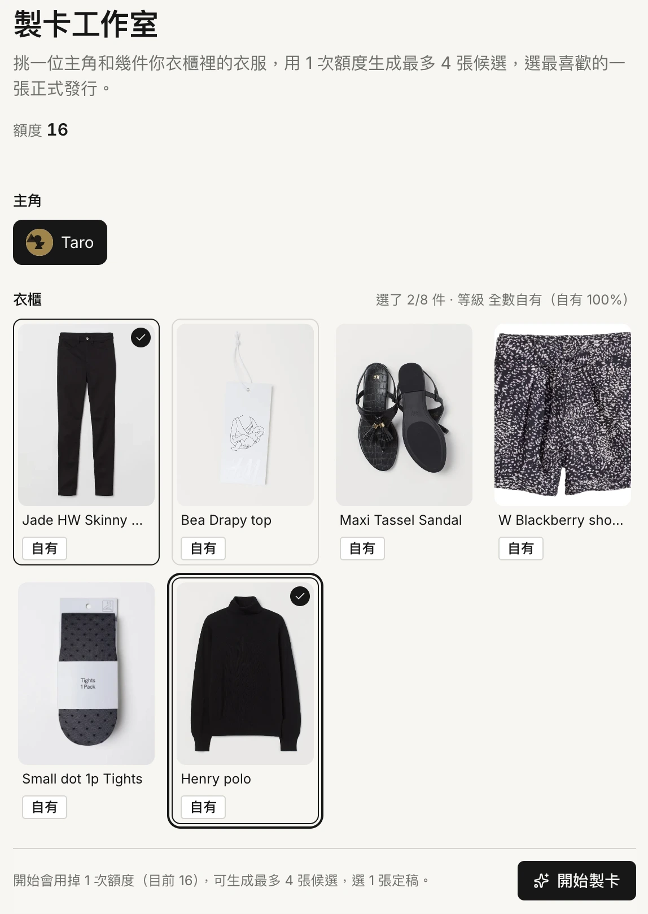
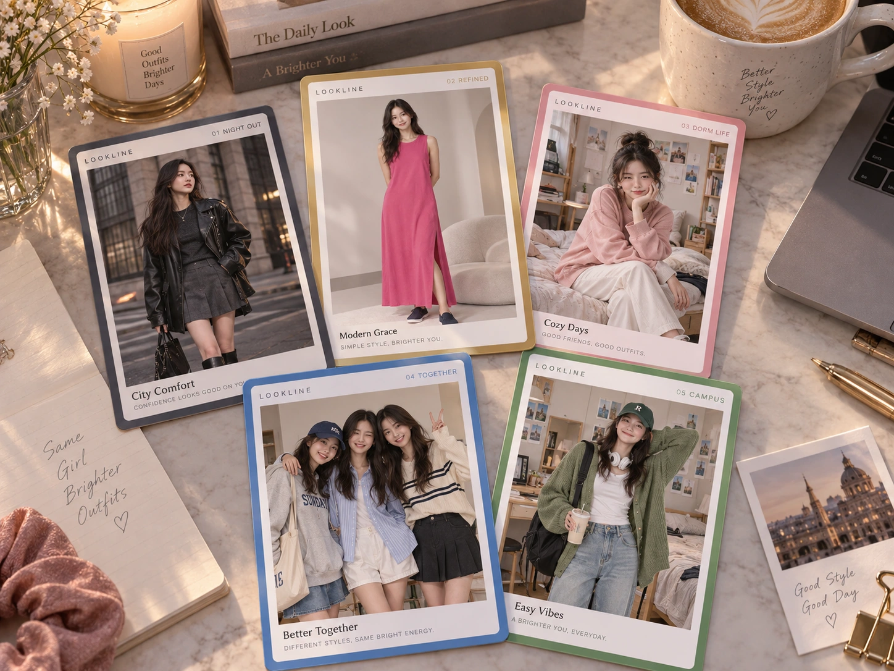

購物時
「我有黑色寬褲，
週末還缺一件上衣。」
幫我找到缺的那一件
理解已有衣物、場合與預算，
快速縮小選擇，延續購買意圖。
讓每一次購買，
延伸為持續的搭配與創作。
Codex & Claude 的歐姆狗
2026 梅竹黑客松 × 聚陽實業
購物時
「我有黑色寬褲，
週末還缺一件上衣。」
理解已有衣物、場合與預算，
快速縮小選擇，延續購買意圖。
穿搭時
「這些衣服，
還能搭出什麼新樣子？」
自由組合、嘗試風格、創作作品，
AI 在需要時提供協助。
Recommend what to buy. Enable what to wear.
衣櫥與偏好，從搜尋起就參與推薦。
真實持有的衣物
持續累積的風格
分享帶來靈感，靈感再回到下一次搜尋。
買完之後，服飾與平台的價值繼續發生。
購物情境示例
「我有黑色寬褲，想找
週末海邊穿的上衣，
不要太休閒。」
更新符合條件的候選商品，
說明與既有衣物相容的原因。
使用者持續說，搜尋持續調整。
核心互動設計目標可用語意片段至候選更新，尚非實測成績
語音／文字
保留對話上下文
提取服飾屬性
增量更新搜尋條件
商品庫、衣櫥、偏好
篩選與排序
只改受影響的結果
持續對話與瀏覽
影像完成後再呈現，搜尋與操作不中斷。
Fast decision first. Generative preview second.
購買同步進入數位衣櫥，
每件衣服都有下一種穿法。


收藏設計：以自有單品比例呈現持有程度。
好友衣物可供試搭，並不等於自己持有。
「不要無袖，
我喜歡寬鬆一點。」
避開無袖 ／ 偏好寬鬆版型
保存為可修改的結構化偏好，
後續搜尋與搭配持續採用。
「想要這種風格，
但找不到適合的材質。」
需求屬性 ／ 商品缺口 ／ 出現情境
彙整未滿足需求與創作、收藏訊號，
提供聚陽未來商品開發的參考。
公開趨勢啟發搭配，平台內的創作再經社群向外傳播。
以上為回饋機制示例。產業端採彙總需求訊號，與個人偏好紀錄分開處理。
對話直接控制搜尋，生成影像走獨立流程。
購買累積成衣櫥，衣櫥持續支援日常穿搭與創作。
由作品連起關係，讓分享帶回靈感與新需求。
持續累積的是衣物、偏好、作品與關係。
解決當下的服裝需求
數位衣櫥延續實體服飾價值
作品分享，讓新的靈感再發生
讓 AI 串起購買、日常穿搭與潮流傳播。